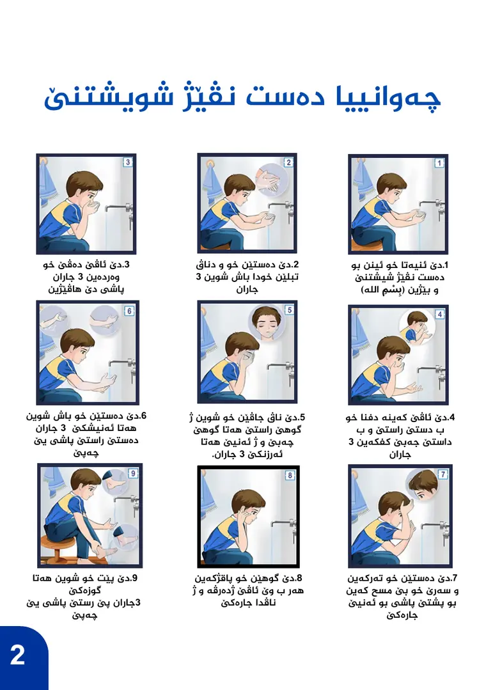
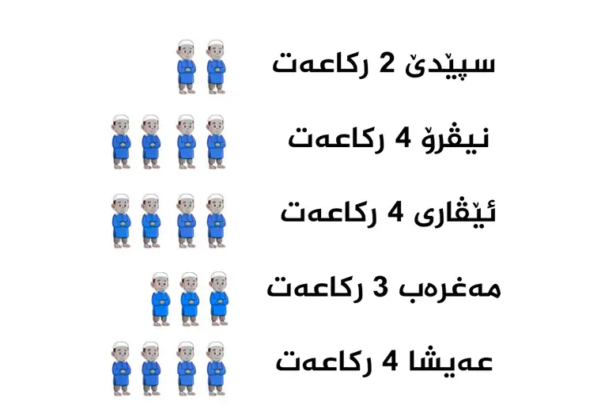

كتيّب مجاني تصدره رێکخراوا جودی لتعليم الأطفال أساسيات الصلاة بلهجتهم الكوردية. المحتوى جمعته ونظّمته مأوى عادل أحمد، ودوري كان التصميم: تحويل نص ديني متسلسل إلى صفحات يقدر طفل يتابعها بنفسه.
القرارات
الرقم قبل الكلمة: الوضوء والصلاة مقسّمين لخطوات مرقّمة، كل خطوة برسم وسطر قصير، فالطفل يتبع الترتيب حتى لو كانت قراءته بطيئة.
العدد يُرى: عدد ركعات كل صلاة مكتوب ومعروض كصفّ من رسوم الأطفال بنفس العدد.
خطّان حسب اللغة: النصوص الكوردية بخط Speda، والآيات والأدعية العربية بخط Noto Sans Arabic، حتى يفرّق القارئ بين الشرح والنص المحفوظ.
أزرق واحد هادئ: نفس الأزرق للعناوين وأرقام الصفحات والرسوم، على خلفية بيضاء بنقش خفيف.
كتيّب يخصّ صاحبه: خانة على الغلاف لاسم الطالب واسم المعلّم.
الصفحات من 1 إلى 8، تُقرأ من اليمين.
1أركان الإسلام وأركان الإيمان
2خطوات الوضوء، مرقّمة من 1 إلى 9
3دعاء بعد الوضوء، وعدد ركعات الفرض
4تجهيز النفس للصلاة
5 و6السور القصيرة والتشهد والصلاة الإبراهيمية
7خطوات الصلاة، مرقّمة من 1 إلى 11
8أدعية مهمة يومية

الوضوء في 9 خطوات.الصلاة في 11 خطوة.

عدد الركعات معروض كصفّ رسوم.
الحدود
اللقطات هنا من ملف التصميم، مش تصوير للنسخة المطبوعة. جمع المحتوى الديني وتنظيمه ليس من عملي.